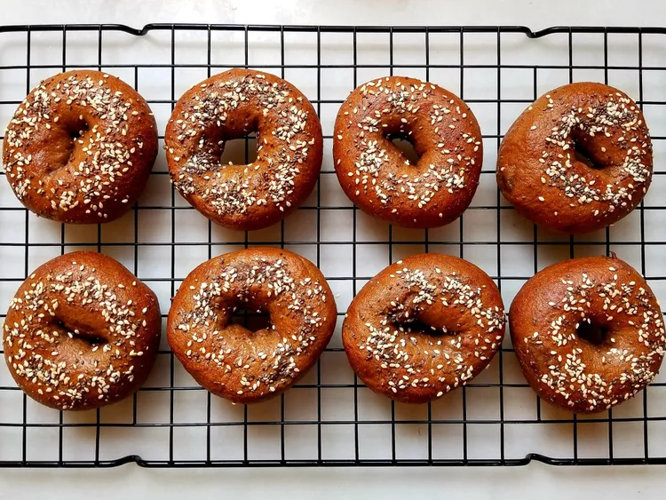

Indulge in the rich, earthy flavors of homemade pumpernickel bagels. These
dense and chewy delights are a perfect choice for breakfast or a savory
snack. With a distinctive dark crust and a hearty, slightly sweet
interior, these bagels are sure to satisfy your taste buds and leave you
craving for more.
- 2 cups bread flour
- 1 cup pumpernickel flour
- 1 tablespoon cocoa powder
- 1 1/2 teaspoons instant yeast
- 1 1/2 teaspoons salt
- 1 1/4 cups warm water
- 2 tablespoons molasses
- 1 tablespoon brown sugar
- Cornmeal, for dusting
-
In a large mixing bowl, combine the bread flour, pumpernickel flour,
cocoa powder, instant yeast, and salt.
-
In a separate bowl, mix the warm water, molasses, and brown sugar until
well combined.
-
Pour the wet ingredients into the dry ingredients and stir until a dough
forms.
-
Knead the dough on a floured surface for about 10 minutes, or until it
becomes smooth and elastic.
-
Place the dough in a greased bowl, cover it with a clean cloth, and let
it rise in a warm place for 1 hour, or until doubled in size.
-
Punch down the dough and divide it into 8 equal portions. Shape each
portion into a bagel shape, ensuring there is a hole in the center.
- Preheat your oven to 425°F (220°C).
-
Boil a large pot of water and add the bagels. Boil for about 1-2 minutes
per side.
-
Remove the bagels from the boiling water and place them on a baking
sheet lined with cornmeal.
-
Bake in the preheated oven for 20-25 minutes, or until the bagels are
golden brown.
- Let the bagels cool on a wire rack before serving.